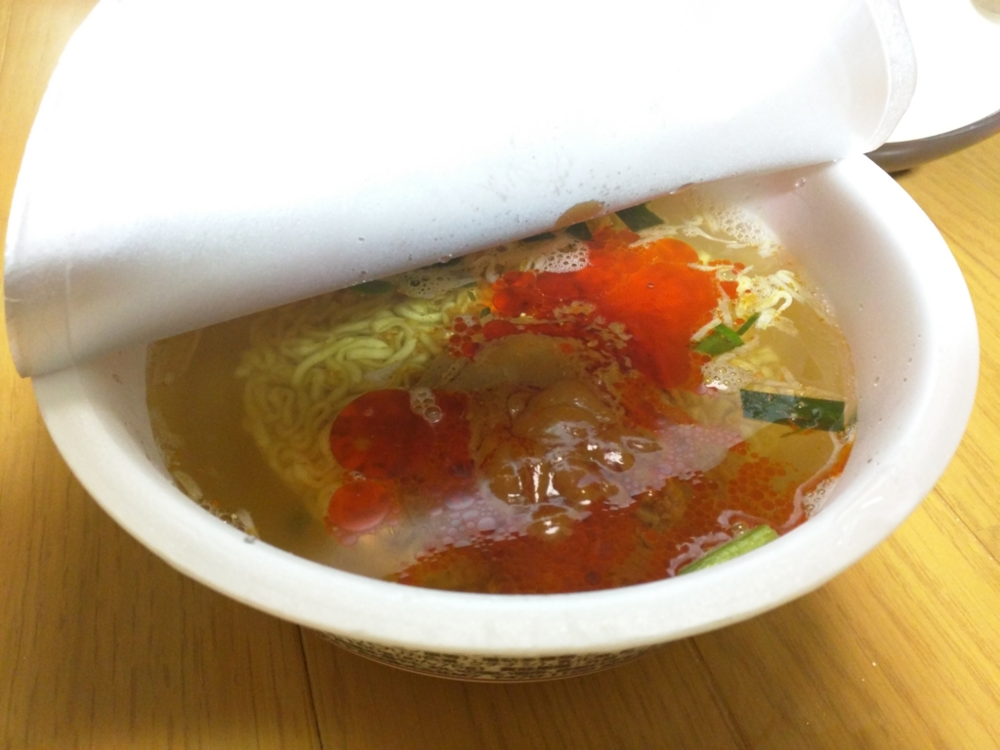
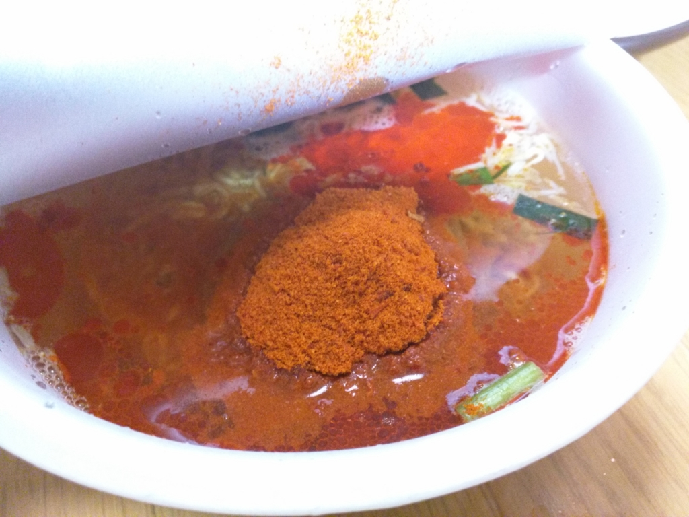
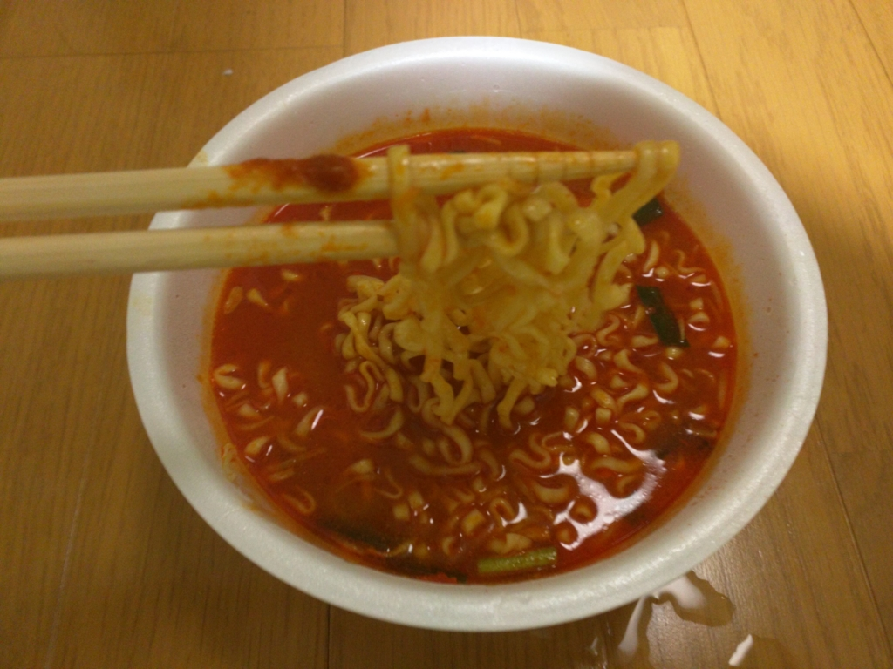

粉末袋の中身が真っ赤っかで頭おかしい「番長花道辛味噌ラーメン」が12個送られてきた。
執筆日時：

予告もなく突然、我が家にこれが1ケース（12個）送られてきた。「食えるもんなら食ってみろ」ってことらしい。「辛辛魚」ではポンポンが瀕死の憂き目にあったが、こいつはどんなもんだろうか。

まずはお湯を注いで、みそっぽいものを投入。一応みそラーメンなのかこれ。

次に粉末を投入。なんかあからさまに辛そうな色をしている。これはヤバい気がする。

5分待って完成。真っ赤なスープが血の池地獄のようだ。
けれど結論から言うと、見た目とは裏腹、「辛辛魚」よりも辛くは感じなかった。翌日下痢になることもなし。
とはいえ、フツーに辛い。三口ぐらい食べると全身からブワッと汗（加齢臭付き）が噴き出る感じ。スープを飲み干してぶはぁっと息を吐くと、唐辛子の香りがする。ヨガフレイムだ。
一方、麺はあまり印象に残らなかった。「辛辛魚」の方がモチっとした太麺だった印象。もしかしたらスープの違いでそう感じただけで、同じものかもしれないけれど。
見た目はイカついけど、実際に話してみると案外フレンドリーなヤクザかヤンキーのような風味だった。Amazon で☆付けるなら4つかなぁ。

- 出版社/メーカー: 寿がきや食品
- 発売日: 2015/05/18
- メディア: 食品&飲料
- この商品を含むブログ (1件) を見る